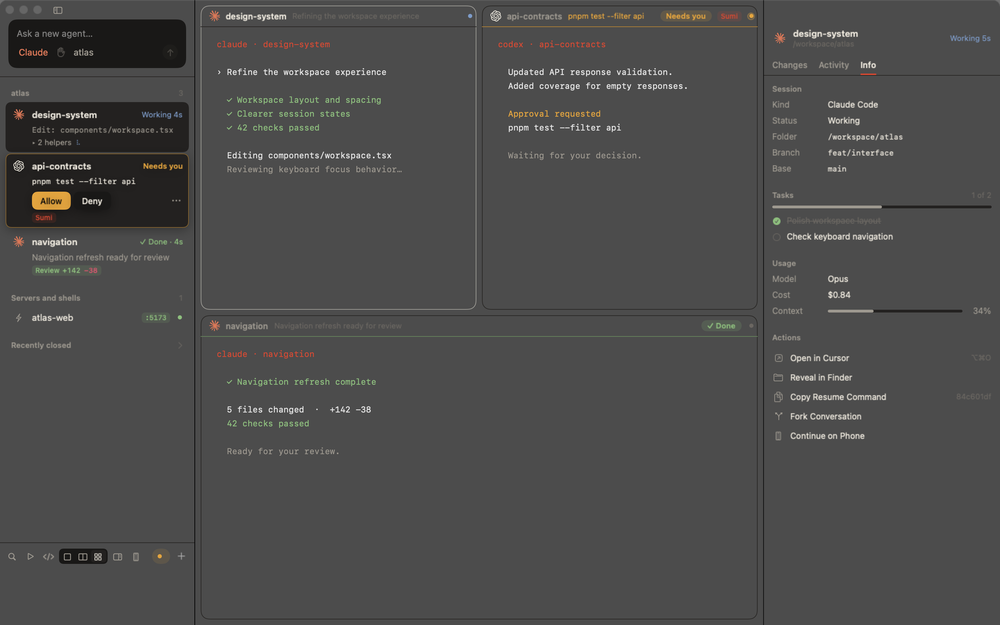
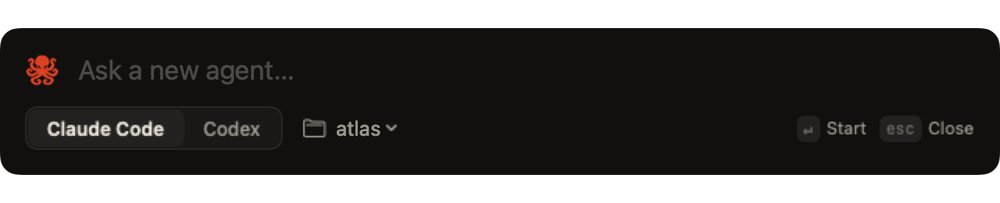

A terminal for running many coding agents at once.
Tako runs Claude Code and Codex side by side in real terminals, and keeps track of them for you: which one needs an answer, which one is done, and what each one changed. Sumi, an agent of its own, runs the rest for you, even from your phone, and a steward keeps your Mac fast while they work.

api-contracts is waiting for approval to run a command, and Sumi is handling its prompts; navigation is done and ready for review.SUMI
An agent that runs your agents
Say what you want in plain words. Sumi starts agents in their own worktrees, passes one agent's result to the next, and takes the easy prompts. From your phone, too.
STEWARD
Keeps your Mac fast
No model, just the kernel's numbers. Hidden idle agents drop to background priority, new ones wait when memory is short, quiet ones sleep and wake on the next message, and builds take turns.
Film
Tako in a minute.
Sumi
An agent that runs your agents.
Click the Tako mark in the window's corner, or press ⌃⌘O, and say what you want. Sumi (墨, ink) is Claude Code or Codex, working through Tako's own tools.
- Starts and arranges. Agents in any project, each in its own worktree, laid out the way you ask.
- Chains work. When one agent finishes, Sumi hands its result to the next.
- Takes the easy prompts. Pushes, deploys, deletes,
sudoand secrets still come to you. - Phone Mode. Step away and talk to Sumi from the Claude app on your phone. Routine requests are approved; anything that needs you reaches your phone.

› start @api and @web on the orders page Started both, each in its own worktree. › when @api is done, tell @web Watching @api. I'll pass it on. @api finished → told @web: GET /orders is ready › handle @web's prompts. prefer pnpm allowed pnpm add zod left for you git push
Steward
Ten agents, and your Mac still feels fast.
The steward has no model behind it. It reads each session's processes from the kernel, shows their memory and CPU in the inspector, and acts on what it sees.
- Background priority. Hidden agents that are idle or waiting on you are lowered. Bring one on screen and it's back at full speed. When the Mac runs hot, hidden working agents are lowered too.
- Memory-aware launches. When macOS reports memory pressure, new agents from Sumi wait their turn instead of tipping the Mac into swap.
- Sleep. An agent idle for 10 minutes quits its CLI to free its memory and keeps its screen. The next message wakes it in the same conversation.
- Builds take turns.
ht heavy -- <command>waits for a slot: half your performance cores, fewer under pressure or heat. - Runaways get flagged. An agent over 3 GB, or idle while its processes burn CPU, is reported to Sumi, which tells you. Nothing is closed without your OK.
What the steward sees
memory normal · heat nominal · heavy slots 1/2 @api focused 1.2 GB 41% CPU @web working 0.9 GB 18% CPU @tests waiting 0.8 GB 1% CPU background @docs idle 0.7 GB 0% CPU background @spike idle asleep wakes on a message
Heavy jobs
$ ht heavy -- xcodebuild test ht: waiting for a heavy-job slot… # runs as soon as a slot frees
Features
Built around the hard part of parallel agents: attention.
Starting five agents is easy. Knowing which one is blocked, which one finished, and what it did is the actual work. Tako keeps the real claude and codex CLIs, with your own config, skills and MCP servers, and builds the rest around them.
Live status for every agent
Working, needs you, done or failed, read from the agents' own hooks rather than guessed from the screen. Each card shows the current step, todo progress, tests and branch. ⌘J jumps to whoever has waited longest.
Approvals in one place
When an agent wants to run a command, the exact command appears on its card with Allow, Always and Deny. Answer there, from the notification, or with ht approve @api.
Agents that talk to each other
Every agent has a name and can message others, read a dev server's logs, start servers, or hand a subtask to a new agent in its own worktree.
A browser for each agent
Embedded Chromium next to the terminal. Each agent drives its own through Chrome DevTools; you can watch and take over at any point.
Review, then merge
See a diff by branch, by uncommitted work, or by a single turn. Comment on lines, commit, open a PR, merge. Every turn is checkpointed, so one turn can be reverted on its own.
Several accounts
Add more Claude and Codex accounts, see each one's usage, and move an agent that hit a rate limit to another account without losing the conversation.
Worktrees by default
Each new agent can get its own git worktree and dev-server port, so parallel agents don't edit the same files or fight over :3000.
Fast and native
Swift and AppKit, with terminals rendered by libghostty, Ghostty's Metal engine. Your Ghostty config applies as-is. No Electron, no account, no telemetry.
Tour
A closer look.

Every agent, and everything about it
The sidebar lists each agent with its state in words, and approvals answer in place. The inspector recaps what happened while you were away, lets you steer with a message, and shows tasks, context and actions for the session.

Review what changed
Diffs by branch, by uncommitted work, or by a single turn. Comment on a line and the comments go back to the agent as one message. Then commit, open a PR, or merge.

Go anywhere from the keyboard
⌘P jumps to a session, runs an action, or sends a message with @name. ⌘J goes to whichever agent has waited longest.

Start agents the way you want
Pick Claude Code or Codex, the folder, permissions, model and effort, and whether it gets its own worktree. Or skip the sheet: type a task in the sidebar and press Return.

Ask from any app
⌃⌥Space opens Quick Ask over whatever you're doing. Type the task, press Return, and an agent starts on it without you leaving your editor.
CLI
Everything is scriptable.
The ht command does anything the app can do, from any shell. Agents get the same abilities as MCP tools, within limits checked against the kernel's view of who is asking.
- Your config stays yours. Hooks and MCP servers attach per launch;
~/.claudeand~/.codexare never written. - Agents can't approve each other. Only you can press keys, answer prompts or close terminals.
$ ht new claude --worktree --task "fix the flaky auth test" @fix-flaky-auth $ ht new codex @api --account work $ ht send @api "users.name is now display_name" $ ht ls @fix-flaky-auth claude needs you Bash: pnpm test auth @api codex working Edit: src/users.ts @web server running :5173 $ ht approve @fix-flaky-auth # a minute later @fix-flaky-auth claude done +12 −4, tests passed $ ht heavy -- pnpm build # waits its turn with other builds
Comparison
How it compares.
Tools for parallel agents fall into three groups. Each gets something right; Tako tries to cover all of it in one app.
| Tako | tmux managersClaude Squad, dmux | Workspace appsConductor, Emdash, Superset | Agent terminalscmux | |
|---|---|---|---|---|
| Real agent CLI in a real terminal | Yes | Yes | Often a chat UI | Yes |
| Native app, GPU-rendered terminal | Yes | Terminal UI | Mostly Electron | Yes |
| Status from the agents' own hooks | Yes | Partly | Yes | Notifications |
| Approve the exact command from a card, notification or CLI | Yes | No | Partly | No |
| A git worktree per agent | Yes | Yes | Yes | No |
| Agents message each other and delegate | Yes | No | Partly | Partly |
| A browser per agent you can take over | Yes | No | Partly | Yes |
| Diff review, line comments, PR, merge | Yes | Partly | Yes | No |
| Per-turn checkpoints with revert | Yes | No | Partly | No |
| Several Claude and Codex accounts | Yes | No | No | No |
| License | MIT | Open source | Varies | GPL |
"Partly" means partial support, or only some tools in the group. "No" means not offered or not documented. From each tool's own README and site, October 2026; if something is out of date, open an issue.
When to use something else. On Linux or Windows, or working over SSH in tmux, use Claude Squad or Emdash. If you mostly run other agents (Gemini, Amp, OpenCode), the workspace apps support more of them. If you want every agent in a container, try Sculptor.
Install
Build it from source.
Signed releases are coming. For now it takes a few commands and a few minutes. You need macOS 15 or later, Xcode 16, Claude Code or Codex signed in, and Node.js for the browser tools.
$ brew install xcodegen zig@0.15 $ git clone https://github.com/nikshepsvn/tako $ cd tako $ scripts/build-ghosttykit.sh # once $ scripts/install.sh